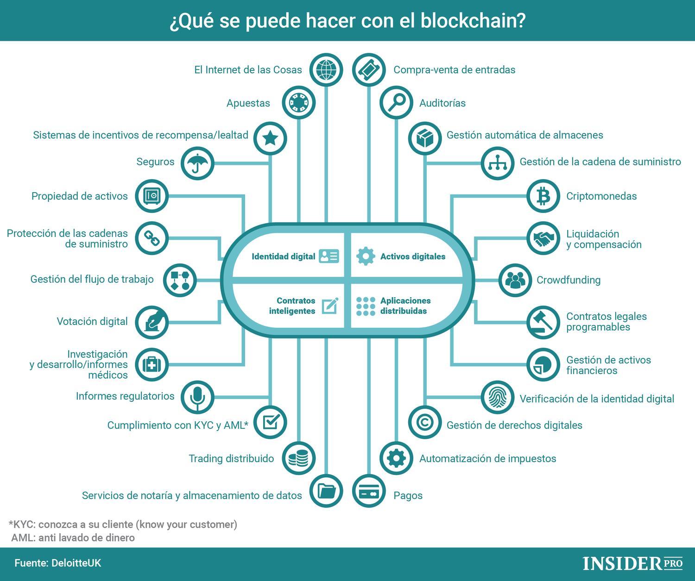
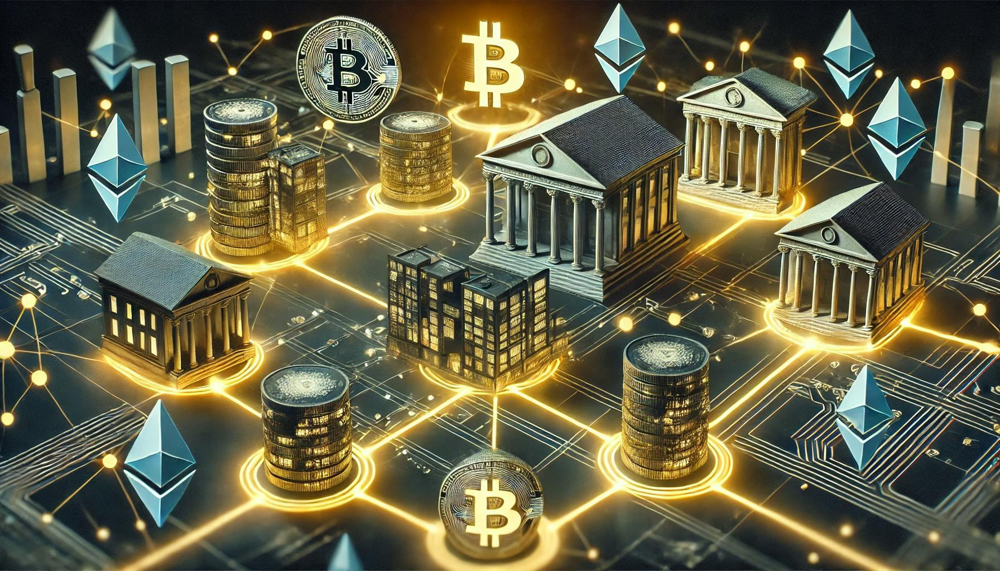
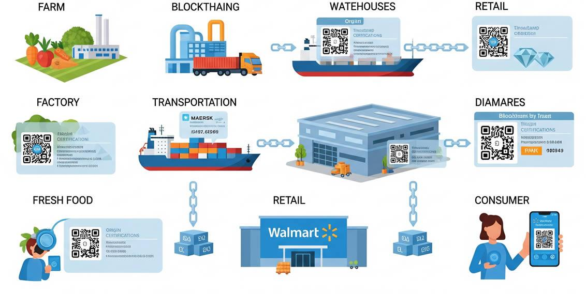
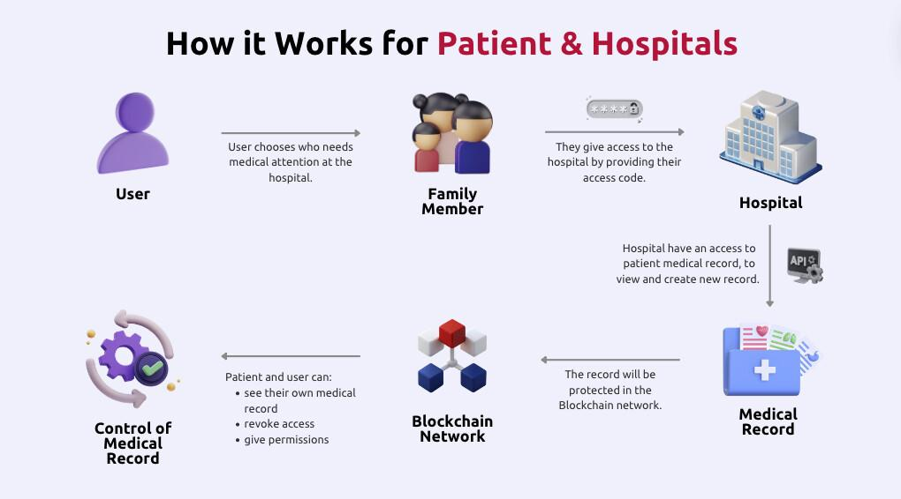
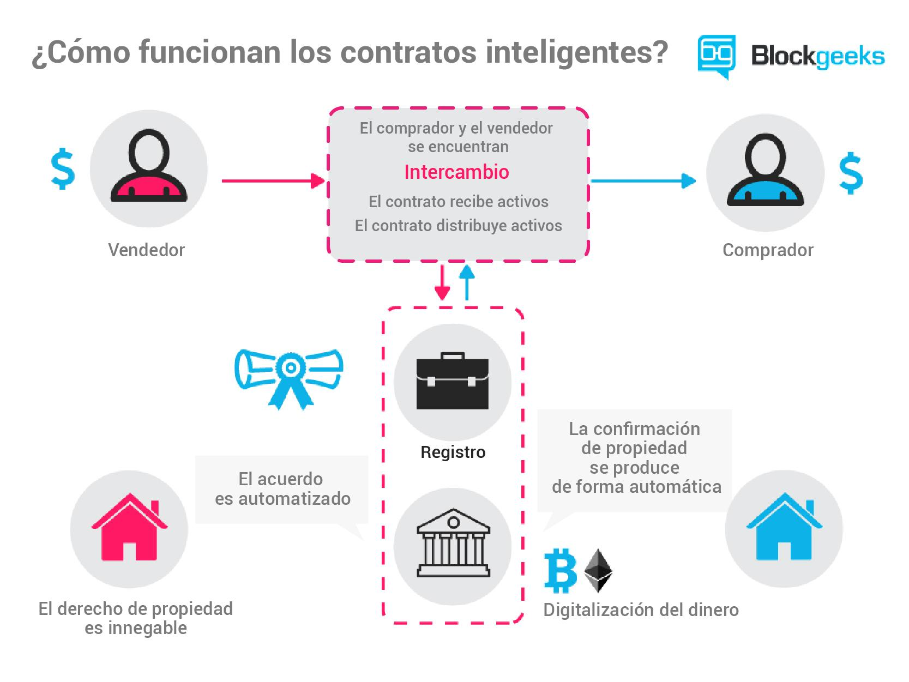

|
|
|
|
¿Dónde se utiliza Blockchain?
Aunque Blockchain se hizo conocida principalmente
gracias a las criptomonedas, sus posibilidades de uso
abarcan diferentes sectores.
La capacidad de registrar información de manera
distribuida y verificar operaciones permite desarrollar
soluciones para diferentes necesidades.

|
Principales aplicaciones
|
Finanzas

Blockchain puede utilizarse para registrar y verificar
operaciones financieras, transferencias y diferentes
tipos de activos digitales.
También permite desarrollar sistemas basados en
contratos inteligentes y aplicaciones financieras
descentralizadas.
|
Cadena de suministro

Las empresas pueden utilizar Blockchain para registrar
información relacionada con el recorrido de productos
desde su origen hasta el consumidor.
Esto puede facilitar la trazabilidad y la consulta del
historial de determinados productos.
|
Salud

Blockchain puede formar parte de soluciones destinadas
a gestionar determinados registros e intercambios de
información dentro del sector sanitario.
Su utilización puede ayudar a mantener registros
verificables y controlar el acceso a determinada
información.
|
Contratos inteligentes
Los contratos inteligentes son programas que pueden
ejecutarse automáticamente cuando se cumplen determinadas
condiciones establecidas previamente.
Se utilizan en diferentes redes Blockchain y pueden
permitir la automatización de procesos sin que cada paso
tenga que ser realizado manualmente.

|
Otros usos
-
Identidad digital:
desarrollo de sistemas para gestionar
determinados datos de identidad.
-
Propiedad digital:
registro y gestión de determinados activos
digitales.
-
Votaciones:
investigación de sistemas que utilicen registros
verificables para procesos electorales o de consulta.
-
Certificados:
registro y verificación de determinados documentos
o credenciales digitales.
|
aplicaciones de Blockchain
Escucha una breve explicación sobre algunos de los usos
de la tecnología Blockchain.
|
|
|
|
|
|
|